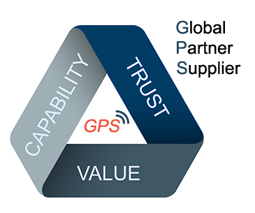
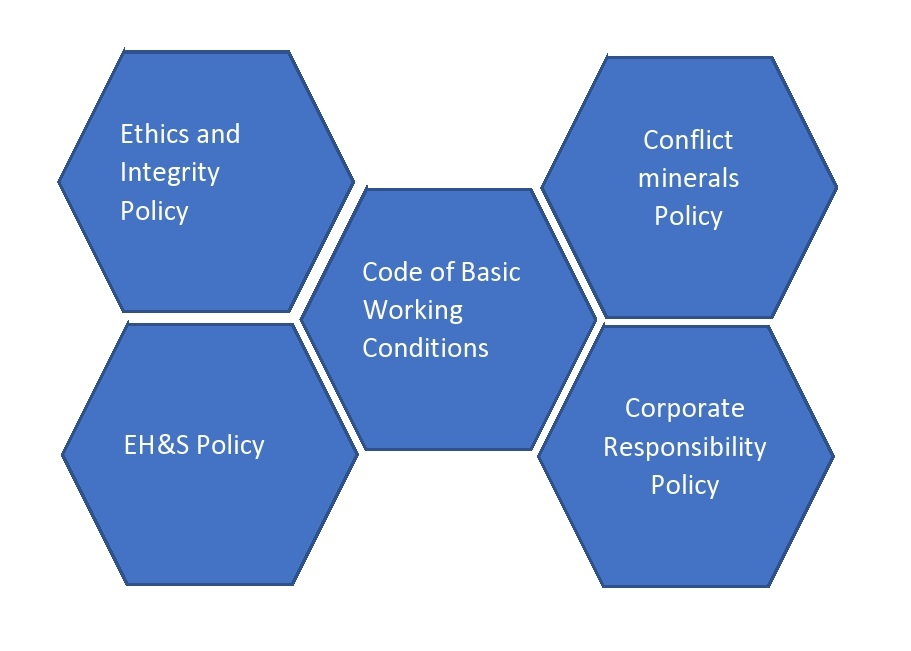

SUPPLIERS
BUILDING A STRONG PARTNERSHIP
Hanon Systems aspires for its company and supply base to create sustainable value and be known for world-class safety standards, creating a healthy and eco-friendly environment, and developing people to support a global business. Pivotal to the company’s success is the relationships with its supplier partners. Hanon Systems is committed to creating opportunities with suppliers that have global capabilities, as well as those with the desire to build these capabilities to support Hanon Systems.
WHAT WE EXPECT

By working with Hanon Systems, you are committing to a relationship built on responsible and sustainable business practice.While we recognise that each supplier is at a different stage in terms of sustainability and corporate responsibility, we encourage our business partners to read our policies and approaches and to adopt similar attitudes within their own operations. Working with suppliers is key to achieving supply chain sustainability. Suppliers are expected to acknowledge and adhere to this Sustainability Policy and its principles in all dealings with and on behalf of Hanon Systems.
Hanon Systems POLICIES AT A GLANCE

SUPPLIER DIVERSITY
A diverse supplier base brings with it opportunities for sustainable growth, for all involved. At Hanon Systems, we continue to seek strategic partnerships that will create value both downstream and upstream, strengthening the company, our suppliers and the communities in which we operate.To hear more about our supplier diversity program, contact hanonsup@hanonsystems.com